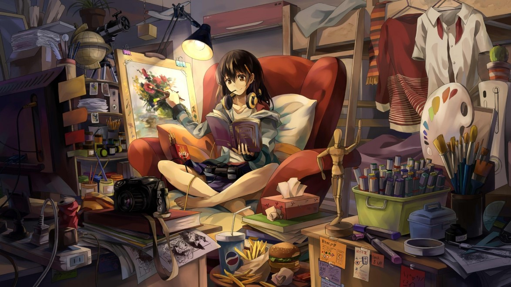

1. Studying
I always liked to study. From my early age I loved to discover new things and master them. I just love to make some target and reach it through learning and experience.
In school my favorite subjects was:
- Algebra
- Geometry
- Physics
- IT
I'm living in Leeds, UK
I always liked to study. From my early age I loved to discover new things and master them. I just love to make some target and reach it through learning and experience.
In school my favorite subjects was:
While I was a kid I was sudying in music school and I was playing synthesizer. When I was 10-12 years old my friend gave me cassette with Linkin Park first album Hybrid Theory, from that time I was fully involved in rock/metal music.
When I was 15 years old I bought my first guitar and played it a lot with my school band, then with university band. I really enjoyed that time.
Back to topGames was always part of my life. I always saw in games more art than in movies, books or music. Games are perfect, games are combination of all arts we know in one, with personal experience.
Also I love in games competition aspect aswell. I spended tons of hours playing different fps, mmo and moba games.
Back to top